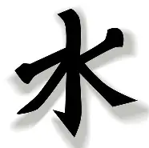

Confucianism
Introduction
When it comes to tradition and festivals all around the world, there is always a sense of harmony between the guests at the events. Morality is crucial for a new religion, multiple religions interpret morality as a sense of awareness in a specific time and space. Now we're going to travel 2,500 years in the past when Confucius is alive and resides in China.
Confucius
Confucius was a chinese philosopher that was born in 551 BCE and passed away in 479 BCE (died at 72), he was primarily famous for his system of beliefs called Confucianism. When he was born in 551 BCE, ideologies were in a state of crisis as he was born in the declining years of the Zhou Dynasty. In his early years, he didn’t receive a proper education which eventually led him down the path of self education and learning from ancient texts. As Confucius was progressively maturing, his profession was a teacher and he believed that everyone deserved some level of education.

Confucianism
Confucianism is the philosophy / system of beliefs that was created in the 500s B.C.E by Confucius when the Zhou Dynasty ruled over China. Confucianism is mainly described to have rules that help promote peace and respect for one another. This ancient philosophy is still present today in many countries such as Vietnam, Korea, and Japan. A Confucian has to follow a set of rules that include promoting peace, morality, and sometimes is involved with ancestry. This system of rules include respecting one's elders and having a sense of morality. Confucianism became a part of China's government during the Han Dynasty.
Neo-Confucianism
Neo-Confucianism is the revitalization of the philosophy Confucianism. It was created in the 900s CE in China during the Song Dynasty in China which was created by multiple key figures. Neo-Confucianism not only includes beliefs from Confucianism but also from others like Buddhism and Daoism, both prominent in China during the 900s. Neo-Confucianism was originally planned to be implemented into Chinese society to revive confucian teachings by taking beliefs from Buddhism and Daoism in order to create a more harmonious society within China. Neo-Confucianism and Confucianism impacted China greatly as many government rules were impacted by them too. They also impacted social life in China as respect and morality are both prioritized from Confucianism.
Relations with Buddhism and Christianity
Some ties can be made with Confucianism being similar to Buddhism and Christianity. While being older than both of the major religions, the three religions have similar ideals for believers. All of them have a set of rules to prevent violence and promote almsgiving. However the three religions have key differences between one another. Christianity has the main belief of the existence of Jesus Christ, Buddhism has the main belief of the Buddha existing and reaching enlightenment, and Confucianism doesn’t have a core belief, rather it is a philosophy, meaning that no deity is worshiped in (sometimes being the creator).
Done? Here are other Links
Back to Main Page
Back to Informational
If you are seeing this, your clock is missing a ding-dong
If you are seeing this, your calender needs a pin or two.